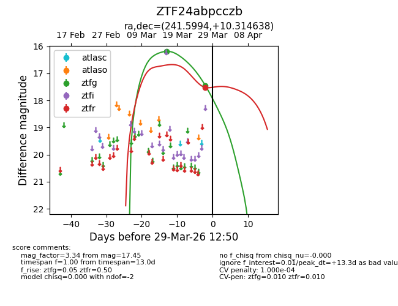
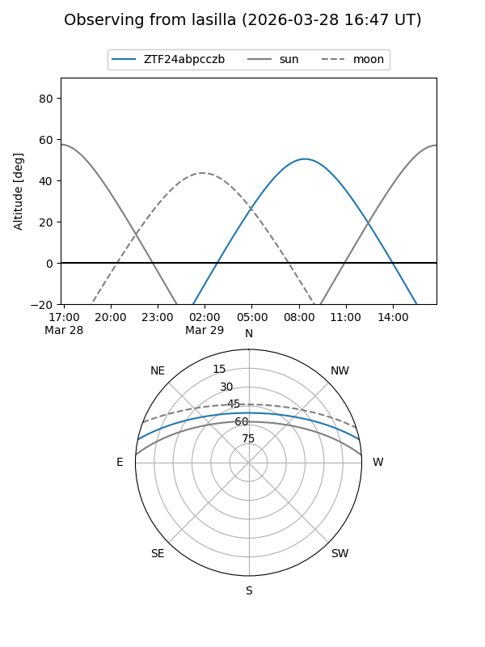
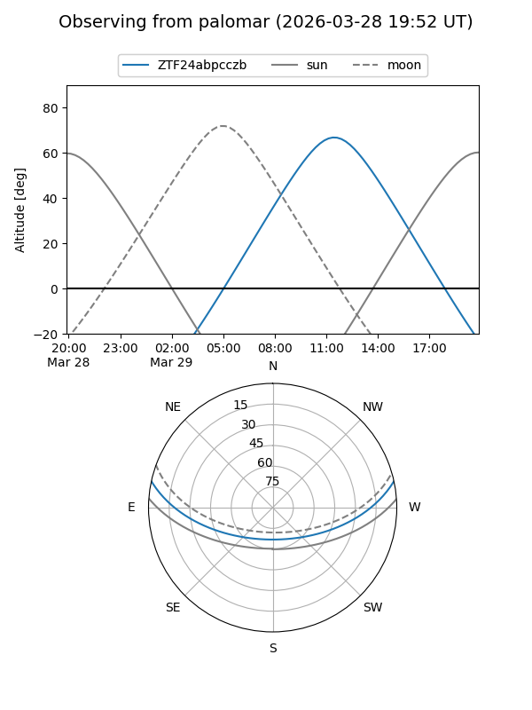
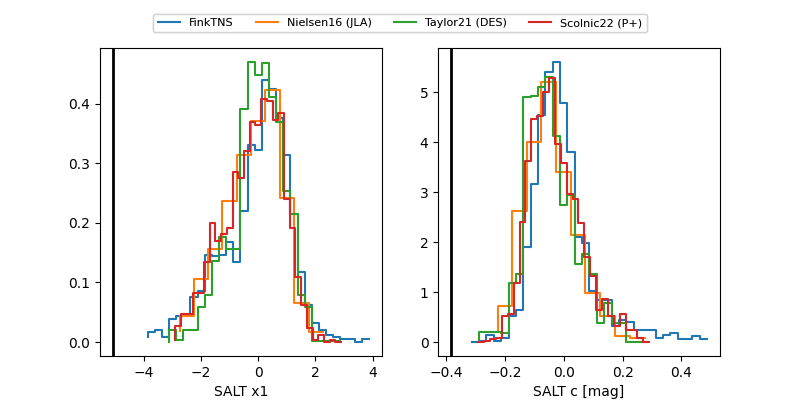

ZTF24abpcczb
Target ZTF24abpcczb at 2026-03-29 12:53
Aliases and brokers:
FINK: link
Lasair: link
ALeRCE: link
alt names
ZTF24abpcczb (ztf,fink_ztf)
Coordinates:
equatorial (ra, dec) = 241.5994,+10.31464
equatorial (HMS+DMS) = 16:06:23.86,+10:18:52.70
galactic (l, b) = (22.4751,+41.23034)
Flags:
likely cv
Photometry:
last ztfg=17.45, ztfr=17.52
2 ztfg, 1 ztfr detections
Lightcurve

Visibility


Additional plots
